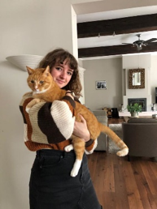

Demi van Vlaardingen
Upcoming UX Designer
Nice to meet you! Let me introduce myself, I´m a 19 year old student at The Hague University of Applied Sciences studying User Experience Design (also called UXD). On this website you will get to learn more about me and my skills.
To the left you can find my resumé, education, contact details, and some projects that I've worked on. Among those projects is this website which I build with HTML and CSS. Beneath here in the gallery, you can find some pictures of the things that I like. Have fun exploring my website!
More about me
I am a hardworking girl that is willing to take new risks and experience in jobs. Innovation is something I’m known for, but I also try to keep to the rules. I get motivated by knowing what goal I have to work for, and I always keep to that. Overall I’m also flexible in job tasks, and working times. Something I don’t mind is working under pressure, as I actually find it a way to get even more productive. On top of that I’m fluent in Dutch and English. As a metaphore you could say I´m a beehive, because I may look calm from the outside, but on the inside I´m full of busy bees. In my free time I like to get creative with drawing and learning new languages such as Japanese, French, and German.
When I first heard about User Experience Design as a study, I was already interested in what it was about. So I went to an open day and got more information about the study. This seemed so much more interesting and exciting than other studies I had looked at. And after this I had almost already made my decision on what to choose as a study. What attracted me was the the fact that I could already recognise so many examples in my daily life that had to do with User Experience, such as the OV-chipcard which I use almost every day, McDonalds' digital ordering system, or when I shop online. I wanted to be part of this too. I want to make life easier for people. Lastly, I liked that it is both a creative and technical study, which really fits me as a person. Like I mentioned before, I like being creative, however I'm also very much interested in the technical side of UXD.
In the picture above, you can see me(!), and my cat Chipsy. When I come home from a long day of school, he is always there to meet me. When I see him I get happy, and he relaxes me when he sits next to me while I make my homework. In other words you could say that he improves my User Experience of life.